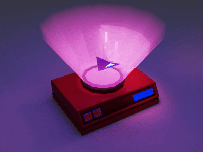
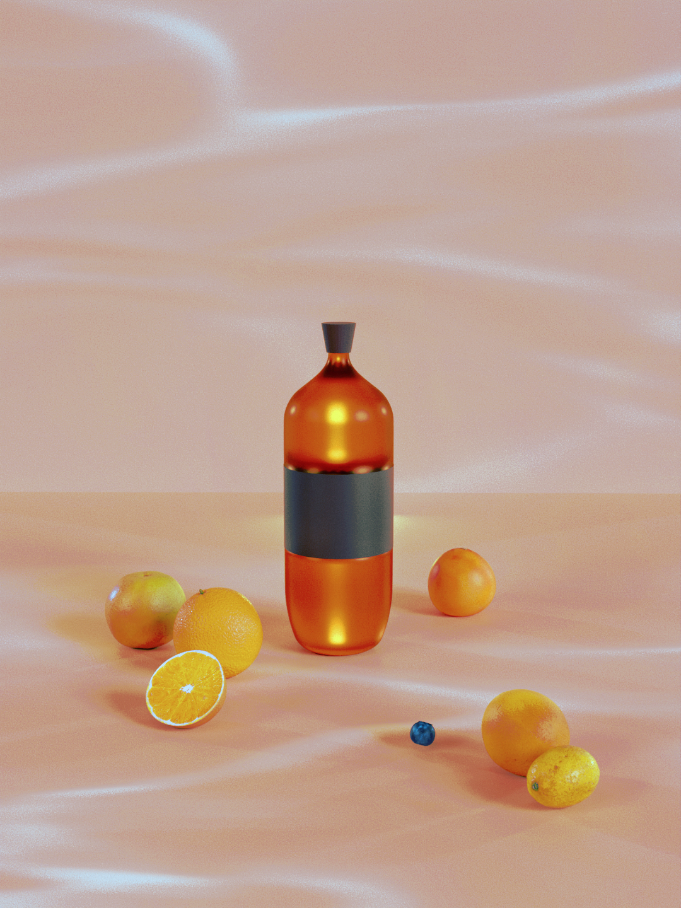
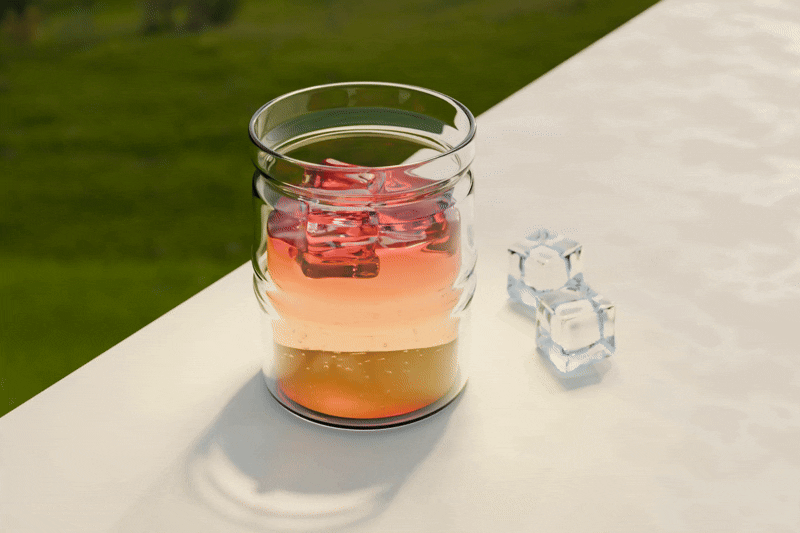
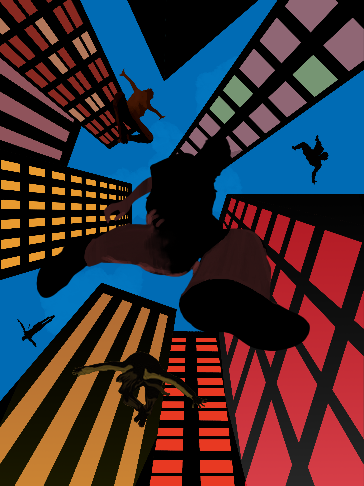

Siyu Ge
1
I am a third year @UofM studying Architecture and Cognitive Science.
I design graphics, brands, and buildings. I love making things that are a little silly and a lot of fun. Outside of studios, you will find me painting, designing jewelry, or just making a creative mess wherever I can.
On campus, I am the co-director of , a community of hackers, designers, and artists working on their passion projects. At the moment, I'm also making branding for , and helping to tell stories for .
If you want to see where my head’s at lately, you can read some of my thoughts . Feel free to reach out at siyuge@umich.edu. I'd love to hear what you're making.
Brand Identity, Social Media, Print Assets, 2024-2025
As the co-director of Shift Creator Space, I built a brand system that rejects the traditional "club" feel in favor of a creative family where learning happens through shared creation. The brand is rooted in the belief that passion means nothing without the courage to ship. By utilizing a high-energy color palette and intentional typographic hierarchy, I designed a system that celebrates the grit of our "Fuck It, Ship It" build nights and the authenticity of our community.
Check out the here.


.jpg)


Print Assets and Merch, 2025
Adobe’s community program hosted a creative meetup at the University of Michigan to bring together designers and makers for an afternoon of connection and collaboration. I designed event assets including name tags, wristbands, and custom merch bags to create a cohesive and playful brand experience.


Brand Identity, Merch, 2025
A collection of sticker, mug, and apparel designs created for my club to strengthen its visual identity and community spirit. Each piece was designed to feel playful, cohesive, and true to the club’s creative personality.


Brand Identity, Mascot, 2025
Meet Sesame, the grumpy black cat mascot I designed for a local coffee shop Better Café, based on the owner’s real pet. Recently launched the new "performative male" edition.


Blender, 2025
Currently teaching myself blender one render at a time through stylistic animations + product demos. Check back later to see more progress.










Architecture, 2025
This coworking space design transforms the traditional workplace into a living forest sanctuary. Standing columns mimic tree trunks while planted vegetation brings nature indoors. Glass panels as walls flood the interior with natural light, creating a space that breathes and evolves throughout the day.
Inspired by Ishigami's celebrated Kanagawa Institute of Technology Workshop, the layout creates organic pathways between workstations while maintaining visual connection throughout the space. This arrangement fosters both collaboration and focus.
In just a week, I designed this environment as a direct response to countless hours spent in poorly-lit, uninspiring libraries. This is a space that nurtures creativity through biophilic design principles and thoughtful spatial organization.


Architecture, 2025
This detailed 3D recreation captures the previous Shift Creator Space clubhouse that stood before making way for urban development. Working entirely from memory, I've reconstructed the vibrant communal areas where creativity flourished for over 5 years.
Every detail, from the characteristic red chairs to the skateboard in the stairwell, represents authentic moments from the hundreds of hours I spent nurturing this creative community as a co-director.
I completed this memorial project over the course of a weekend, translating intangible memories into a tangible 3D model that honors the space where hundreds of student creators found their voice. It is both a personal tribute and a historical document, preserving the spatial identity of a place that shaped the creative journey of countless students in their college life.

Digital Art, 2022-2025
This collection represents more than mere portraits–-it's a living archive of the people who have shaped my journey. Through deliberate color choices and thoughtful lighting, I've sought to capture not just physical likenesses, but the essence of each individual's spirit and emotional landscape.Each face tells a story that intertwines with my own.
Art has always been my most authentic form of documentation. Where words fail, these images speak volumes about connection, intimacy, and the beautiful complexity of human relationships that have defined my path.


Architecture, 2024
This project explores the analytical power of architectural drawing techniques applied to personal space. Working methodically over three weeks, I documented every architectural element and personal artifact, creating a series that bridges technical drafting with intimate spatial storytelling. I used different projection techniques to uncover distinct spatial truths about the same environment. This exercise sharpened my technical skills while developing a deeper appreciation for how drawing conventions shape our understanding of space.

Jewelry Design, 2023-2024
A small collection of handmade jewelry pieces that merges craft and design. From structured geometric pieces to organic crocheted silver wire forms, each explores how material and process shape expression.


Mixed Media, 2022-2025
A collection of personal projects and experiments from self-portraits and sketches to stained glass and ceramics. These pieces are where I have fun, make a mess, and remind myself why I love creating in the first place.


